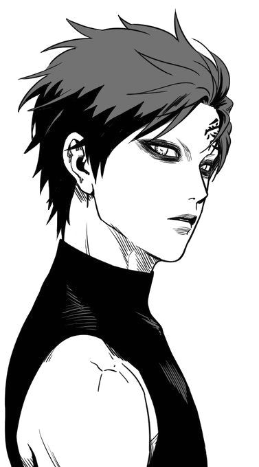

Мелодичные звуки рояля, словно нити, исходили из-под пальцев и тянулись к сердцам людей в зале. Эти нити обвивали и сдавливали, причиняя боль, заставляя слезы наворачиваться на глаза. В такие моменты даже самые скептически настроенные слушатели начинали задумываться о существовании бога. И этим богом для них становился Мин Юнги.
Длинные пальцы извлекали звуки из клавиш, создавали новые нити, сжимали сердца всё сильнее. С каждой секундой звук становился всё громче, всё увереннее, но даже эта уверенность не делала минор торжественнее. Из зала доносились всхлипы, а кто-то, не сдерживаясь, скулил. На концертах Мин Юнги это было привычно — со спокойным лицом не выходил никто. Тихие, мелодичные триоли сменялись грубыми и громкими аккордами. Воздух в зале становился всё более напряженным. И вот звучит самый громкий, самый главный аккорд. Он сжимает нити настолько сильно, что люди забывают как дышать. В зале тишина, никто не смеет двигаться, никто не может двигаться. И в этой тишине громом разносится тихий выдох, за которым следует минорное соло правой руки. Нити ослабляют свою хватку, но не спадают с сердец. Люди вскакивают со своих мест, зал взрывается аплодисментами. Слишком громко. Слишком обычно.
Юнги встал перед залом, поклонился и, не меняя выражения своих глаз, покинул сцену. Тут тоже аплодировали, но уже состав команды, и только одна девушка стояла и смотрела на него. Посторонний зритель мог бы сказать, что она была абсолютно спокойна, но Юнги видел, как тряслась папка в её руках. Мужчина усмехнулся едва заметно, но девушка всё поняла и моментально успокоилась. Она дождалась, когда Юнги поравняется с ней, и они уже вместе последовали в гримерку. Мужчина распахнул дверь в просторное помещение, которое ему выделили. Недолго думая, он сразу же прошел к дивану и завалился на него, закрыв глаза сгибом локтя. Девушка молча стояла над мужчиной, когда в комнату залетел какой-то паренёк.
| ФИО | Иванюк Михаил Генадьевич | ||
|  | Адрес: ул. Белорусская, д. 19 | ||
| 1 семестр 2016/2017 уч. года | Дата | Предмет | Оценка |
| 31.12.2016 | ОАиП | 4 | |
| 5.01.2017 | Физика | 4 | |
| 11.01.2017 | ОИТ | 4 | |
| 16.01.2017 | Математика | 4 | |
| 22.01.2017 | АЛОЦВМ | 4 | |